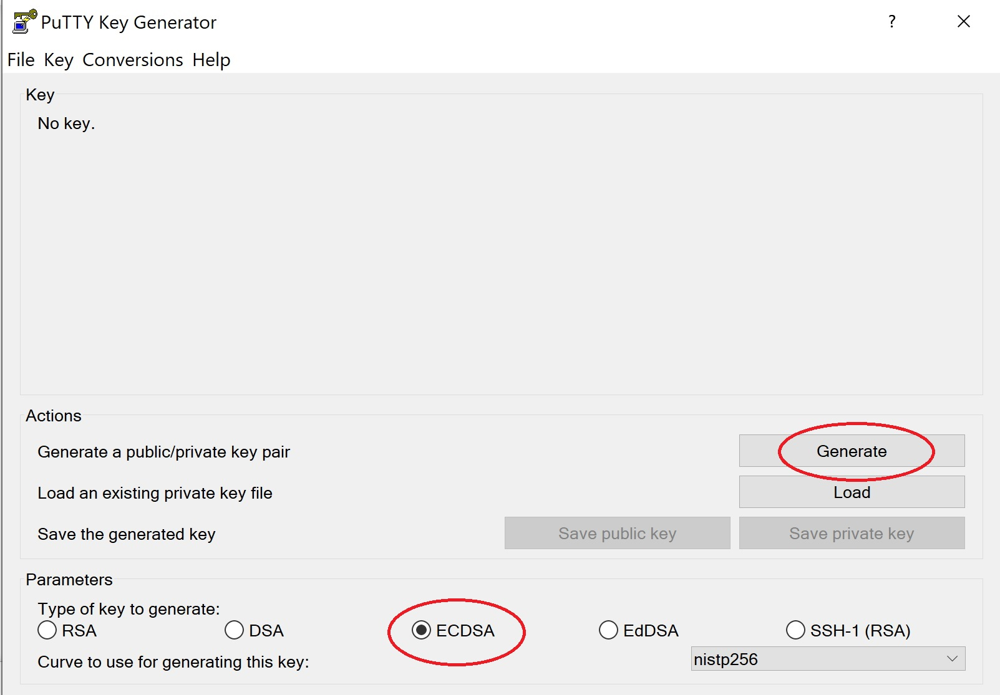
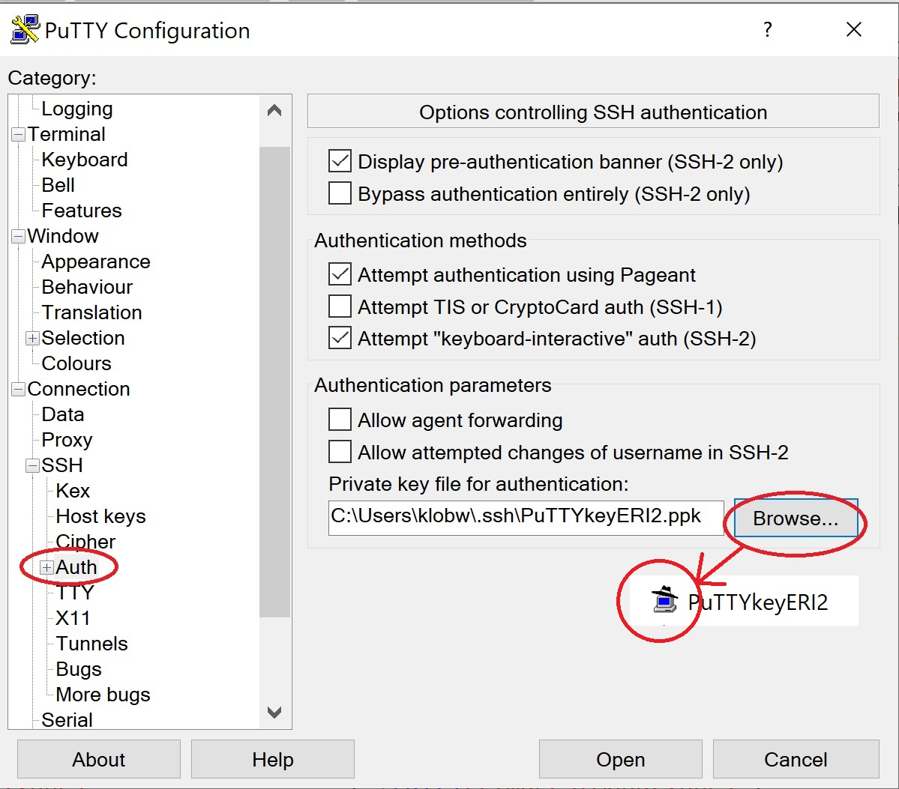

Connecting to the ERI cluster
Contents
Connecting to the ERI cluster#
================================================================================================================================
The Earth Research Institute hosts a series of “fat-node” linux systems to facilitate large-scale computing. To learn more about the computing resources at ERI, see the GRIT IT Page. For a more comprehensive overview of cluster computing, see these hpc carpentry lessons.
Account setup#
You will first need a github account so that you can be invited to the necessary code repositories. Send your github username to Jordan Graesser so that he can invite you to the repositories (make sure to accept the invitations). If you do not already have a github account, you can create one here: GitHub home. If you use your UCSB email, you will then qualify for a free student account, which means you can invite more than three people to collaborate in any repositories you create. You can request student benefits here. Click on “Get Benefits” in the upper right corner, then click the blue “get student benefits” box. Fill out the form and press “continue”.
To join the ERI computing cluster, you will first need to request an ERI account This can be done through Kendra Walker to make sure you are added to the appropriate spaces. You will be directed to a cite to create your credentials. You will need to create a password and also an ssh key.
generating ssh keys#
On a mac / linux system:
type “ssh-keygen -t ecdsa” in the terminal.
copy the contents of “~/.ssh/id_ecdsa.pub” (This is your public key) into the appropriate box here.
your private key can be found at “~/.ssh/id_ecdsa”. Do not share its contents with anyone.
On Windows You will need an interface software like PuTTY to connect to the cluster. See here for more on Putty. When you download PuTTY, you will also have the option of downloading PuTTYgen for key generation (if not automatically packaged). Open PuTTYgen and generate your key as follows:
(To create an ssh key pair with PuTTYgen: |
|
|---|---|
 |
|
1) Select ECDSA as type and click “Generate” |
2) Create a Passphase and Save Private Key. Copy contents of box for public key and paste that [here]. |

Connect to VPN#
If you are not on campus, you will need to connect to the UCSB network through a VPN (Pulse Secure). If you are not already set up with a VPN, see ucsb’s it page for vpn setup.
ssh into the bellows server on the ERI cluster#
The CEL project space resides on the bellows server, which is first reached through a general ERI gateway.
This means you will need to ssh twice into the system to reach our space:
ssh [username]@ssh.grit.ucsb.edu ##(pre 2023 account holders use ssh.eri.ucsb.edu)
#enter password at prompt
ssh [username]@bellows.eri.ucsb.edu
#enter password at prompt
If using windows, it is easiest to connect to the cluster via an ssh (Secure SHell) client such as (PuttyL)= Putty, Xming, or MobaXterm. A Putty conneciton simulates the remote terminal view, and thus requires fully command-line based interfacing. MobaXterm, on the hand, offers ssh/ftp hybrid that allows for both command-line and graphical interfacing; this may be preferable to those who are more confortable manipulating files visually. Note, X2go is also an option that provides a graphics viewer. See the CSC instructions here (you will need to modify these for the ERI login).
(To configure Putty: |
||
|---|---|---|
1) Host name = username@ssh.grit.ucsb.edu. Name configuration and save “Session” on left, “Save”, then “Open” 2) Click “SSH” on left. Remote Command = username@bellows.eri.ucsb.edu |
||
 |
3) Click “Auth” on the left and browse to your private ssh key. Correctly configured keys will have an icon with a hat. 4) Click “Session” on left, “Save”, then “Open” |
You will be prompted for your password twice. Next time you log in via Putty, just load your configuration by its name and “Open”.
To configure MobaXterm: |
|
|---|---|
Click new session icon in top left corner |
1) Click “SSH” in top left corner. 2) In “Remote Host” enter username@ssh.grit.ucsb.edu 3) Open “Advanced SSH Settings” 4) In “Execute Command” enter ssh username@bellows.eri.ucsb.edu 5) Click Ok. |
You will be prompted to enter your password twice. |
|
Next time you log in via MobaXterm, just double click your session name. |